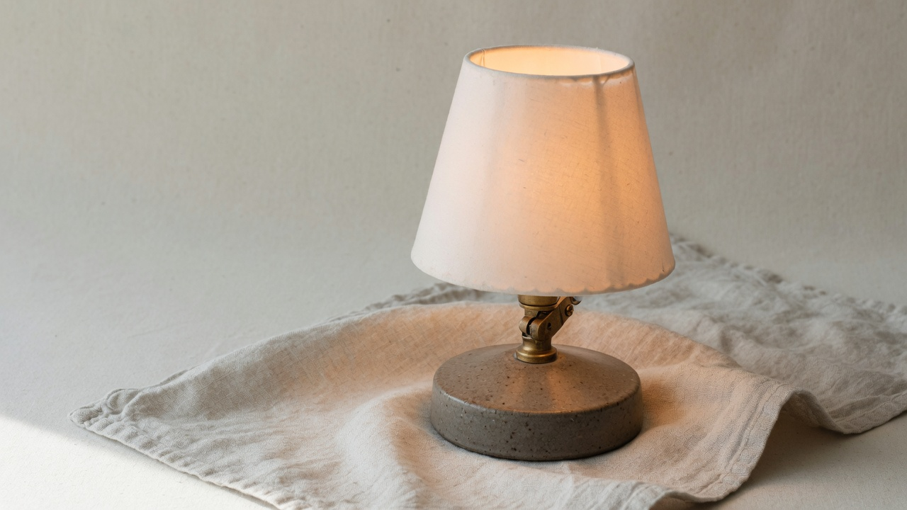

Desk lamp
Northline
$128$48
The shade tilts on one joint, and the base stays put on a crowded desk. It ships in a linen box, with a spare bulb in the lid.
The joint
One brass knuckle, tightened by hand. It holds the shade where you leave it, and it does not creep back overnight. There is no spring and no hidden hinge to work loose.
If you share a table, swing the shade toward yourself. The base does not travel with it.
The shade
Paper, over a wire ring, warm rather than white. At arm's length the glow stops at the edge of a book. It is not a room light, and it is not trying to be one.
The shade lifts off if you ever need to change the bulb. No clips, no tools.
The base
Stoneware, low and heavy, with a foot that sits flat on a marked desk. The clay is matte. It will not mirror the window behind you.
The cord leaves from the back, so it does not cross the page you are reading.
In the box
The lamp, wrapped in linen. A spare bulb in the lid. A short note on how tight the joint should feel: firm, not forced.
Nothing to assemble. Set it down, tilt the shade, and it is already on.
Care
Dust the shade with a dry cloth. Wipe the base with a damp one and stop there. The clay does not want oil, and the paper does not want water.
If the joint ever loosens, a quarter turn brings it back. That is the whole service manual.
The cord
Cloth covered, two meters, the color of the shade's shadow. It runs to a small inline switch you can find without looking.
Coil the extra under the desk. The lamp itself stays where you put it.